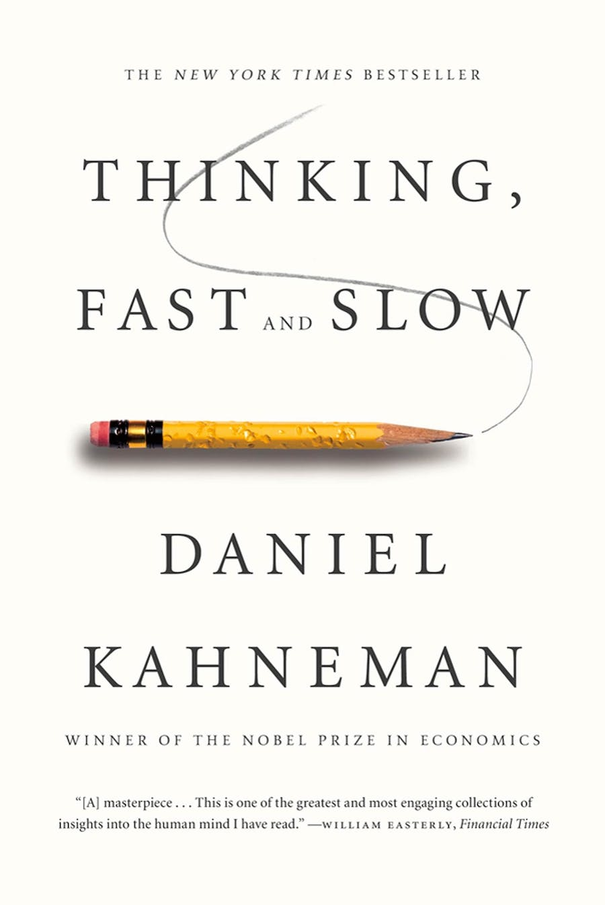
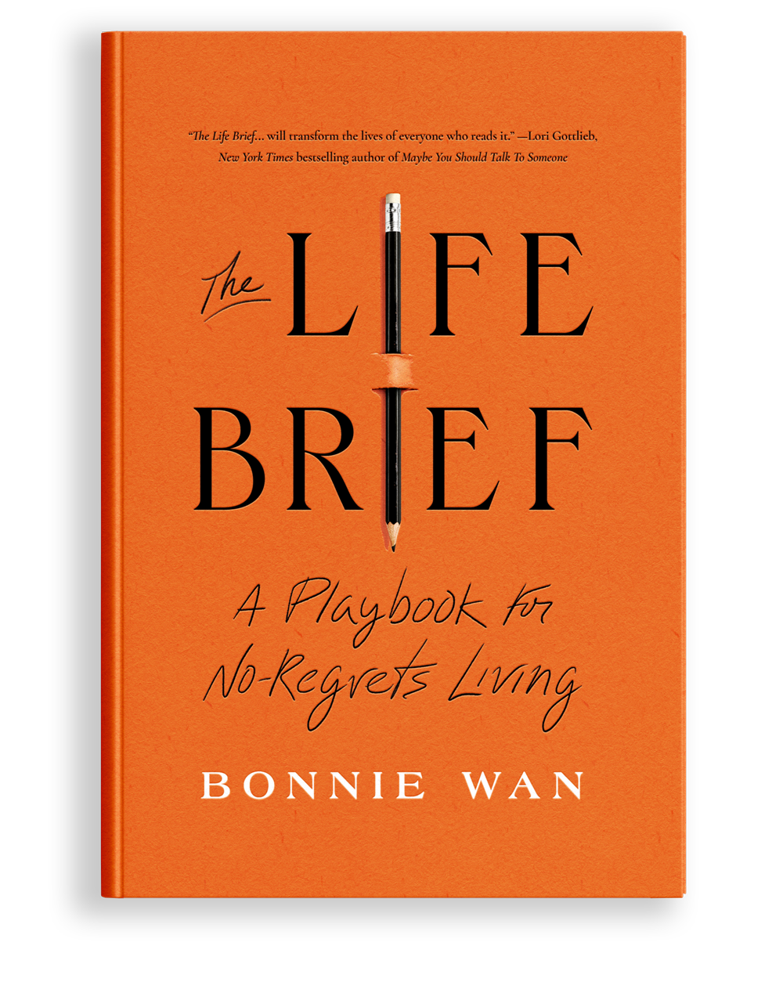
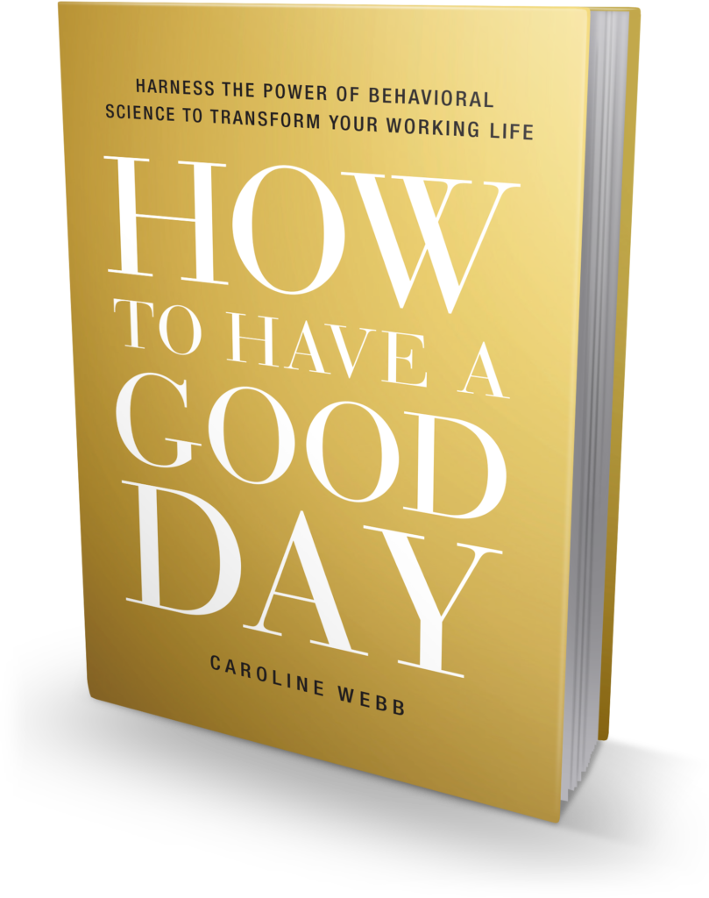
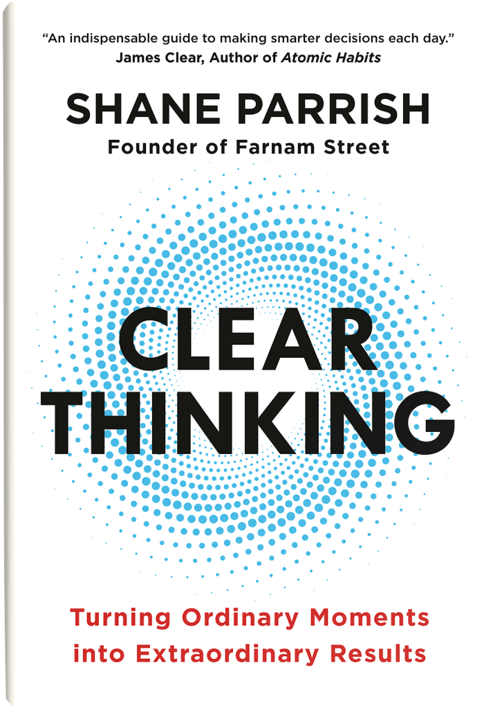

Knowledge awaits with a turn of a page
I gravitate towards literature that is grounded in science and features reputable personalities. The list is not in any particular order, but this first book is an all-time favorite and an excellent guide from the father of cognitive science. This book describes the working of the mind as an uneasy interaction between two fictitious characters: the automatic System 1 and the effortful System 2. Furthermore, Daniel Kahneman writes about the sixth sense and that “intuition is nothing more and nothing less than recognition.” Our brains record and store experiences, whether they are firsthand or learned through reading or listening. When a similar situation arises, our brains subconsciously recognize it, activating our intuition. This intuition may be accurate or not, but it functions beyond conscious reasoning. Intuition is essentially the sense of knowing something without fully understanding the underlying reasons.
This is life-changing, and while it’s true that hope is not a strategy, "The Life Brief" offers a methodical and strategic framework to uncover answers to profound questions, fostering hope for a fulfilling life. Drawing from her personal journey and vulnerabilities, the author shapes the narrative. This book showed me how to unearth the hope I needed during times of change (or stagnation) by engaging in introspection and posing critical questions. It inspired me to shift my current lifestyle and transcend limiting beliefs, guiding me towards the fulfilling life I aspire to. Bonnie Wan is a Partner and Head of Brand Strategy at Goodby, Silverstein & Partners, one of Fast Company’s 2021 Most Innovative Companies In The World. As a career brand strategist she has been celebrated as an Ad Age Leading Woman for 2023 and 2022’s Chief Strategy Officer of the Year.
 "Fired up! Ready to go!" I found myself captivated by Barack Obama’s memoir, offering a fascinating insight into the thoughts and perspectives of the former US president. His ability to inspire people, elevate optimism, and care for America becomes evident early in the book. It’s enlightening to read about world affairs and gain an understanding of complex issues that were persistent then and are still relevant today. Furthermore, Obama offers profound insights into leadership, revealing a thoughtful approach that emphasizes the balance between bold vision and the pragmatic, often painstaking work of political compromise, all while navigating the complex tapestry of American democracy. He offers perspective of the nation's cultural and social fabric, examining issues of racial identity and equality with a nuanced lens that reflects his personal journey and his presidential tenure at the forefront of America's ongoing dialogue on race.
"Fired up! Ready to go!" I found myself captivated by Barack Obama’s memoir, offering a fascinating insight into the thoughts and perspectives of the former US president. His ability to inspire people, elevate optimism, and care for America becomes evident early in the book. It’s enlightening to read about world affairs and gain an understanding of complex issues that were persistent then and are still relevant today. Furthermore, Obama offers profound insights into leadership, revealing a thoughtful approach that emphasizes the balance between bold vision and the pragmatic, often painstaking work of political compromise, all while navigating the complex tapestry of American democracy. He offers perspective of the nation's cultural and social fabric, examining issues of racial identity and equality with a nuanced lens that reflects his personal journey and his presidential tenure at the forefront of America's ongoing dialogue on race.
Recent progress in behavioral science has greatly enhanced our understanding of brain function, decision-making processes, and peak performance. However, applying these insights in everyday life has been challenging, a gap that Caroline Webb addresses in her book, "How to Have a Good Day." Author converts three major scientific concepts into practical steps, helping us emulate the quality of our best days. She offers strategies for setting priorities, optimizing time, excelling in interactions, maximizing intelligence, amplifying personal influence, overcoming challenges, and increasing energy and enjoyment. Essentially, Webb provides techniques for improving the quality of our days, regardless of whether we work in an office, studio, outdoors, or at home.
 A vivid storytelling and rich descriptions of India, and the human experience of its citizens offer a stark contrast between Mumbai's brutal realities and its enduring hope. The story kept me immersed with its meticulous attention to detail and the emotional depth of its characters. This is perhaps best previewed in the following quote: 'It took me a long time and most of the world to learn what I know about love and fate and the choices we make...' Roberts' narrative transported me into the heart of India that is seldom seen through the lens of the Western world. His lyrical prose, coupled with profound insights into the human condition, elevates "Shantaram" beyond the confines of its genre, making it a cherished book among those who seek not just a story of adventure, but also a deeper, more meaningful exploration of life's intricate tapestry.
A vivid storytelling and rich descriptions of India, and the human experience of its citizens offer a stark contrast between Mumbai's brutal realities and its enduring hope. The story kept me immersed with its meticulous attention to detail and the emotional depth of its characters. This is perhaps best previewed in the following quote: 'It took me a long time and most of the world to learn what I know about love and fate and the choices we make...' Roberts' narrative transported me into the heart of India that is seldom seen through the lens of the Western world. His lyrical prose, coupled with profound insights into the human condition, elevates "Shantaram" beyond the confines of its genre, making it a cherished book among those who seek not just a story of adventure, but also a deeper, more meaningful exploration of life's intricate tapestry.
 A transformative guide that goes beyond traditional self-help by providing a framework and practical strategies for making better decisions and positioning oneself for success. It emphasizes that success isn't about being smarter but rather about being better positioned and making informed choices. The book promises to equip readers with tools to master their fate, navigate situations intelligently, and enhance decision-making from a position of strength. It outlines eleven ways it will help the reader, including learning to master circumstances, adopting automatic rules for decision-making, reprogramming counterproductive habits, and maintaining composure in challenging situations. The goal is to transform desired behaviors into defaults, gain clarity, and turn ordinary moments into extraordinary results, ultimately providing a roadmap for applying these principles in everyday life and work.
Inspiration library
- The Making of a Manager by Julie Zhuo
- A Swim in the Pond in the Rain by George Saunders
- An Illustrated Book of Bad Arguments by Ali Almossawi
- Sapiens / Homo Deus by Yuval Noah Harari
- Siddhartha by Hermann Hesse
- Eat, Pray, Love by Elizabeth Gilbert
- Good Strategy Bad Strategy by Richard P. Rumelt
- Dear Data by Giorgia Lupi and Stefanie Posavec
- Principles for Dealing with the Changing World Order by Ray Dalio
- Parisian Days by Banine (Umm El-Banu Assadullayeva)
- All About Love by Bell Hooks
- What Color Is Your Parachute? by Richard Nelson Bolles
- The Book of Joy by Dalai Lama, Desmond Tutu, and Douglas Carlton Abrams